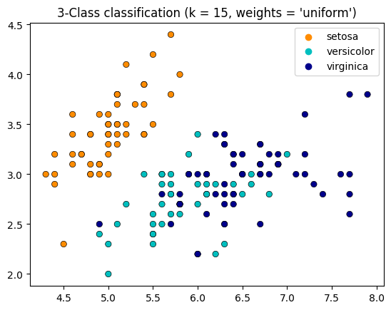
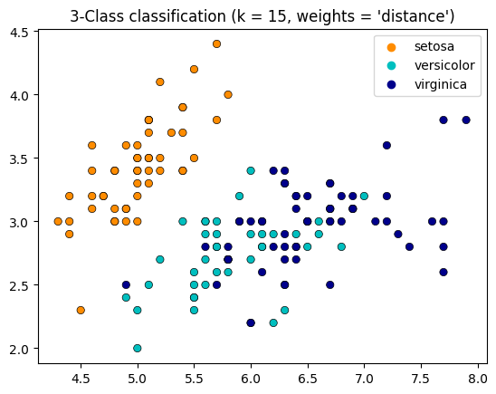

Implementasi K-NN pada database iris (Tugas 3)#
import matplotlib.pyplot as plt
import seaborn as sns
import pandas as pd
from matplotlib.colors import ListedColormap
from sklearn import neighbors, datasets
#from sklearn.inspection import DecisionBoundaryDisplay
n_neighbors = 15
# import some data to play with
iris = datasets.load_iris()
# we only take the first two features. We could avoid this ugly
# slicing by using a two-dim dataset
X = iris.data[:, :2]
y = iris.target
# Create color maps
cmap_light = ListedColormap(["orange", "cyan", "cornflowerblue"])
cmap_bold = ["darkorange", "c", "darkblue"]
for weights in ["uniform", "distance"]:
# we create an instance of Neighbours Classifier and fit the data.
clf = neighbors.KNeighborsClassifier(n_neighbors, weights=weights)
clf.fit(X, y)
_, ax = plt.subplots()
# Plot also the training points
sns.scatterplot(
x=X[:, 0],
y=X[:, 1],
hue=iris.target_names[y],
palette=cmap_bold,
alpha=1.0,
edgecolor="black",
)
plt.title(
"3-Class classification (k = %i, weights = '%s')" % (n_neighbors, weights)
)
plt.show()


df = pd.read_csv('/content/Iris.csv')
---------------------------------------------------------------------------
FileNotFoundError Traceback (most recent call last)
<ipython-input-3-02807ced98e3> in <cell line: 1>()
----> 1 df = pd.read_csv('/content/Iris.csv')
/usr/local/lib/python3.10/dist-packages/pandas/util/_decorators.py in wrapper(*args, **kwargs)
209 else:
210 kwargs[new_arg_name] = new_arg_value
--> 211 return func(*args, **kwargs)
212
213 return cast(F, wrapper)
/usr/local/lib/python3.10/dist-packages/pandas/util/_decorators.py in wrapper(*args, **kwargs)
329 stacklevel=find_stack_level(),
330 )
--> 331 return func(*args, **kwargs)
332
333 # error: "Callable[[VarArg(Any), KwArg(Any)], Any]" has no
/usr/local/lib/python3.10/dist-packages/pandas/io/parsers/readers.py in read_csv(filepath_or_buffer, sep, delimiter, header, names, index_col, usecols, squeeze, prefix, mangle_dupe_cols, dtype, engine, converters, true_values, false_values, skipinitialspace, skiprows, skipfooter, nrows, na_values, keep_default_na, na_filter, verbose, skip_blank_lines, parse_dates, infer_datetime_format, keep_date_col, date_parser, dayfirst, cache_dates, iterator, chunksize, compression, thousands, decimal, lineterminator, quotechar, quoting, doublequote, escapechar, comment, encoding, encoding_errors, dialect, error_bad_lines, warn_bad_lines, on_bad_lines, delim_whitespace, low_memory, memory_map, float_precision, storage_options)
948 kwds.update(kwds_defaults)
949
--> 950 return _read(filepath_or_buffer, kwds)
951
952
/usr/local/lib/python3.10/dist-packages/pandas/io/parsers/readers.py in _read(filepath_or_buffer, kwds)
603
604 # Create the parser.
--> 605 parser = TextFileReader(filepath_or_buffer, **kwds)
606
607 if chunksize or iterator:
/usr/local/lib/python3.10/dist-packages/pandas/io/parsers/readers.py in __init__(self, f, engine, **kwds)
1440
1441 self.handles: IOHandles | None = None
-> 1442 self._engine = self._make_engine(f, self.engine)
1443
1444 def close(self) -> None:
/usr/local/lib/python3.10/dist-packages/pandas/io/parsers/readers.py in _make_engine(self, f, engine)
1733 if "b" not in mode:
1734 mode += "b"
-> 1735 self.handles = get_handle(
1736 f,
1737 mode,
/usr/local/lib/python3.10/dist-packages/pandas/io/common.py in get_handle(path_or_buf, mode, encoding, compression, memory_map, is_text, errors, storage_options)
854 if ioargs.encoding and "b" not in ioargs.mode:
855 # Encoding
--> 856 handle = open(
857 handle,
858 ioargs.mode,
FileNotFoundError: [Errno 2] No such file or directory: '/content/Iris.csv'
df.head()
| Id | SepalLengthCm | SepalWidthCm | PetalLengthCm | PetalWidthCm | Species | |
|---|---|---|---|---|---|---|
| 0 | 1 | 5.1 | 3.5 | 1.4 | 0.2 | Iris-setosa |
| 1 | 2 | 4.9 | 3.0 | 1.4 | 0.2 | Iris-setosa |
| 2 | 3 | 4.7 | 3.2 | 1.3 | 0.2 | Iris-setosa |
| 3 | 4 | 4.6 | 3.1 | 1.5 | 0.2 | Iris-setosa |
| 4 | 5 | 5.0 | 3.6 | 1.4 | 0.2 | Iris-setosa |
#create a dataframe with all training data except the target column
X = df.drop(columns=['Species'])
#check that the target variable has been removed
X.head()
| Id | SepalLengthCm | SepalWidthCm | PetalLengthCm | PetalWidthCm | |
|---|---|---|---|---|---|
| 0 | 1 | 5.1 | 3.5 | 1.4 | 0.2 |
| 1 | 2 | 4.9 | 3.0 | 1.4 | 0.2 |
| 2 | 3 | 4.7 | 3.2 | 1.3 | 0.2 |
| 3 | 4 | 4.6 | 3.1 | 1.5 | 0.2 |
| 4 | 5 | 5.0 | 3.6 | 1.4 | 0.2 |
#separate target values
y = df['Species'].values
#view target values
y[0:5]
array(['Iris-setosa', 'Iris-setosa', 'Iris-setosa', 'Iris-setosa',
'Iris-setosa'], dtype=object)
from sklearn.model_selection import train_test_split
#split dataset into train and test data
X_train, X_test, y_train, y_test = train_test_split(X, y, test_size=0.2, random_state=1, stratify=y)
from sklearn.neighbors import KNeighborsClassifier
# Create KNN classifier
knn = KNeighborsClassifier(n_neighbors = 3)
# Fit the classifier to the data
knn.fit(X_train,y_train)
KNeighborsClassifier(n_neighbors=3)
#show first 5 model predictions on the test data
knn.predict(X_test)[0:5]
array(['Iris-virginica', 'Iris-setosa', 'Iris-versicolor', 'Iris-setosa',
'Iris-setosa'], dtype=object)
#check accuracy of our model on the test data
knn.score(X_test, y_test)
1.0
from sklearn.model_selection import cross_val_score
import numpy as np
#create a new KNN model
knn_cv = KNeighborsClassifier(n_neighbors=3)
#train model with cv of 5
cv_scores = cross_val_score(knn_cv, X, y, cv=5)
#print each cv score (accuracy) and average them
print(cv_scores)
print('cv_scores mean:{}'.format(np.mean(cv_scores)))
[0.66666667 1. 1. 1. 0.7 ]
cv_scores mean:0.8733333333333333
from sklearn.model_selection import GridSearchCV
#create new a knn model
knn2 = KNeighborsClassifier()
#create a dictionary of all values we want to test for n_neighbors
param_grid = {'n_neighbors': np.arange(1, 25)}
#use gridsearch to test all values for n_neighbors
knn_gscv = GridSearchCV(knn2, param_grid, cv=5)
#fit model to data
knn_gscv.fit(X, y)
GridSearchCV(cv=5, estimator=KNeighborsClassifier(),
param_grid={'n_neighbors': array([ 1, 2, 3, 4, 5, 6, 7, 8, 9, 10, 11, 12, 13, 14, 15, 16, 17,
18, 19, 20, 21, 22, 23, 24])})
#check top performing n_neighbors value
knn_gscv.best_params_
{'n_neighbors': 2}